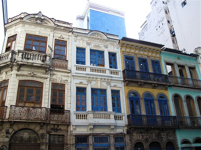

Linda Loo lives in a tall old building in Looville, she has a small apartment. Looville was founded in the early cinema era, around the 1950's ny the Great Loo. Linda's great great great grandfather. She's living in an old building because she's always traveling around the world so she doesn't need a bigger place.
